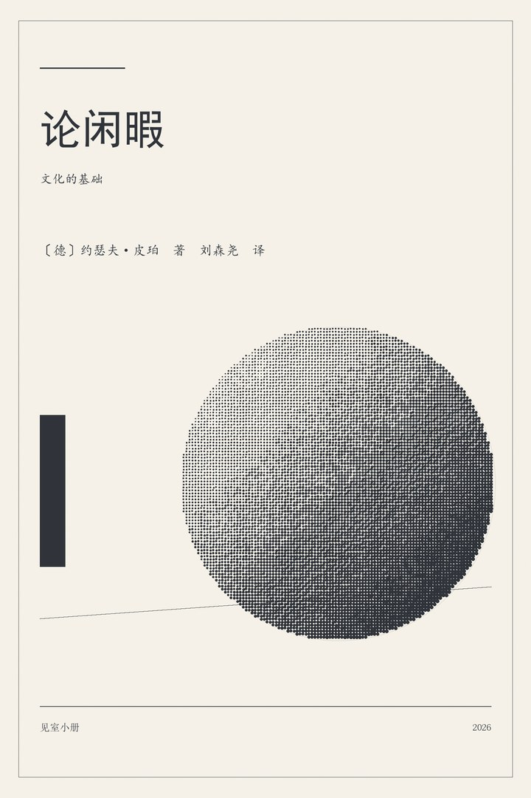
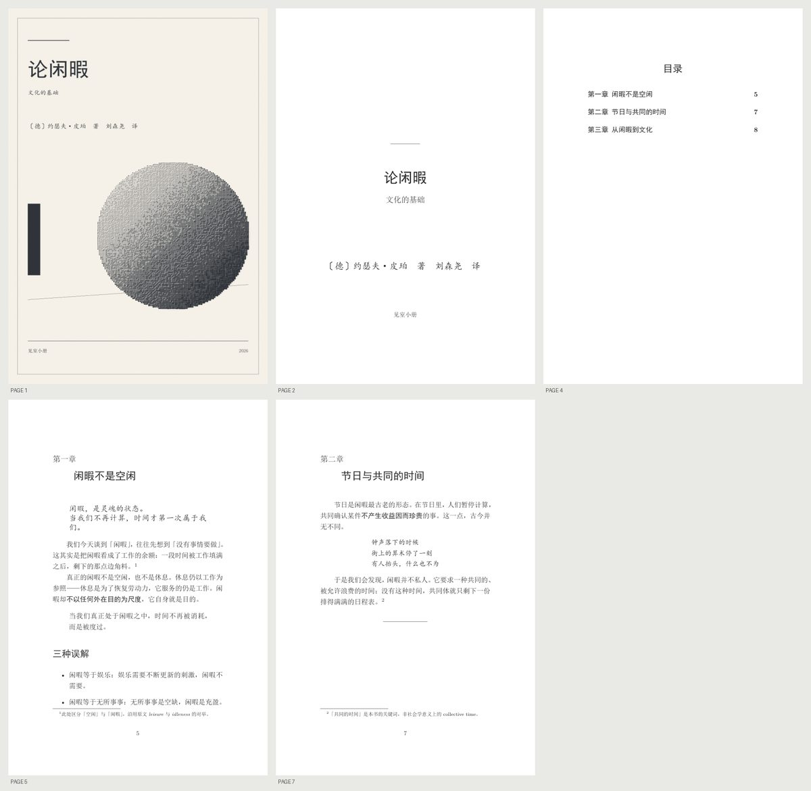

把一份书稿，
印成一本书。
一份 Markdown 进去，EPUB 3、PDF、封面、网页预览、质检报告一起出来。 七种中文装帧版式，从开本、边距到行距都由参数精确控制；本机运行，不联网上传，不依赖任何第三方服务。

成品长什么样
01 / SAMPLE下方是同一份书稿由 PDF 管线排出的实际页面：封面、书名页、目录、篇章首页与正文页。网页预览版可直接在浏览器里翻看，EPUB / PDF 可下载到阅读器里看。

七种装帧版式
02 / STYLES开本、四边边距、行距、专色、书眉特征各自成组；PDF 走 geometry + ctex 精确分页，EPUB 走同一组数值映射成的重排 CSS，两种介质气质一致。切换版式不用改稿子。
它凭什么不出错
03 / DESIGN一份 IR，所有出口
书稿先解析成唯一的 Book 结构，EPUB、PDF、封面、预览、目录、质检全部从它派生。绝不从 PDF 反推 EPUB——那正是排版最容易走样的地方。
两条正文源互不覆盖
body.tex 供既有的 tex_to_epub.py 管线，book_body.tex 供 LaTeX 整书模板。两条链路各自的契约被明确分开，谁也不会把谁的文件写坏。
有则复用，无则降级
核心只依赖 Python 标准库 + Pillow。检测到 TinyTeX 才出 PDF 并注入书签；检测到 publisher-typography 脚本才追加跑那套 23 项校验。拷到任何一台机器，EPUB / 封面 / 预览照常产出。
在自己电脑上跑
04 / GET STARTED- 取一份源码clone 或下载 zip，不需要账号、不需要 API key。
- 装一个可选依赖Pillow 用于生成封面；PyMuPDF 可选，用于给 PDF 注入目录书签。要出 PDF 再装 TinyTeX。
- 双击启动，或敲一行命令图形界面在 127.0.0.1:8777，产物落在 out/<任务号>/。
# 克隆 git clone https://github.com/daheitian/sees-press.git cd sees-press # 可选依赖（核心只用标准库） pip install Pillow PyMuPDF # 图形界面 python server.py --open # 或者命令行：用示例文稿跑通全流程 python -m sees_press.cli demo # 换成自己的稿子 python -m sees_press.cli build 稿件.md \ --title "书名" --author "作者" --style 疏朗留白 # 看看还有哪六种版式 / 检查本机环境 python -m sees_press.cli styles python -m sees_press.cli doctor
Windows 用户可直接双击 启动.bat。没有全局 Python 时，用本机的绝对路径调用解释器即可。PDF 为可选产物：没装 XeLaTeX 时会自动跳过，EPUB、封面、预览与质检不受影响。
出厂前先过闸
05 / QC样例书《论闲暇》的实测结果：mimetype 位置与压缩方式、OPF/NCX 结构、全部 XHTML 合法性、脚注引用与目标配对、图片引用、目录链接可达性、LaTeX 残留、PDF 溢出提示，逐项检查并落成一份可读的质检报告。
内置复核与 publisher-typography 的 23 项校验脚本同时执行，形成双保险；PDF 验收以 xelatex 编译日志为准。